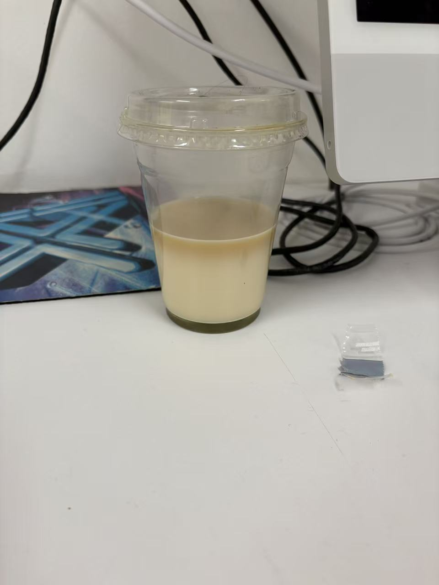
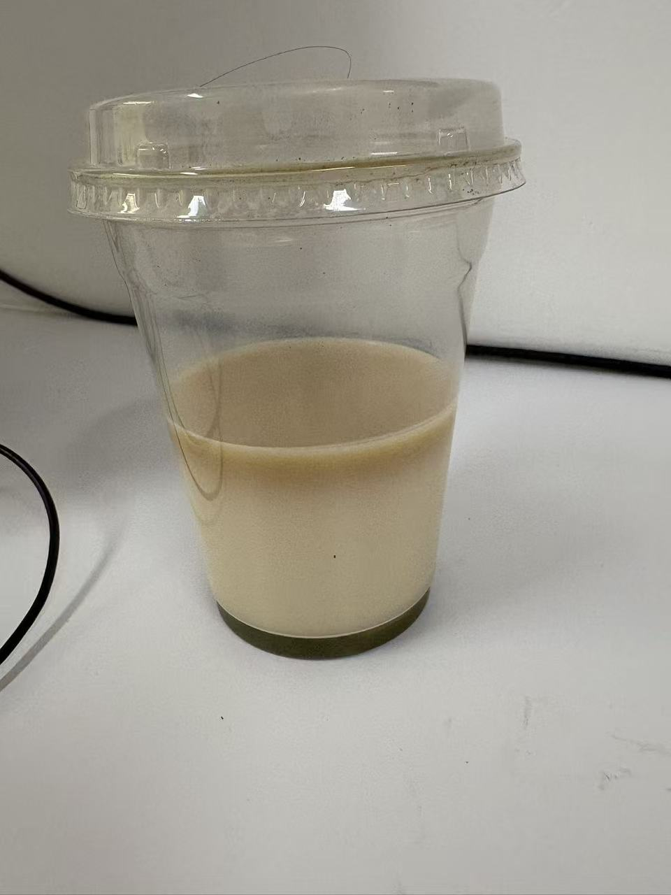
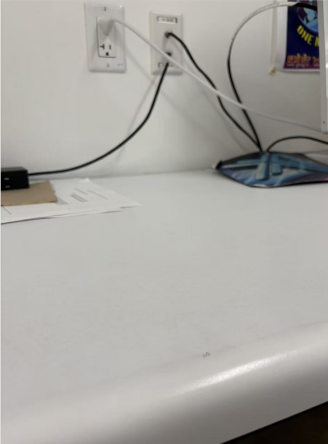

Overview
Day 1
Day 2
Day 3
SPM-2026-0416-MT
THE CUP THAT REFUSED TO LEAVE.
Observation period: 3 days
Start Date: 2026.04.16
End Date: 2026.04.18
Record: 3 times

| Zone | Element | Observation |
|---|---|---|
| A | Container | Disposable sealed cup; standard takeaway format |
| B | Contents | Layered beverage; milk base with apparent matcha component; third dark layer observed by Day 2 |
| C | Disposition | Removed by Day 3; likely by facilities staff |
Conclusion
A forgotten milk tea cup, observed across three days as its contents separated and stratified. Its removal on Day 3 was most likely the work of the cleaning staff at Building 1111 — whose role, it should be noted, proves more consequential to the fate of lost objects than this study initially anticipated.
SPM-2026-0416-MT
DAY 1
Record
A takeaway milk tea cup was discovered on a desk in the print room, Room 304, Building 1111. The cup was unattended, seal intact. Its contents were already separated into two distinct layers: a pale lower layer of milk, and above it, a layer of what appeared to be matcha.
The specimen was left in situ. The layering suggested the drink had been sitting untouched for some time before discovery.
SPM-2026-0416-MT
DAY 2
Record
The cup remained in position, undisturbed. A third layer had now formed at the top — a darker, denser band of what appeared to be milk that had continued to separate overnight. The stratification had progressed. The cup was documented and left in place.


SPM-2026-0416-MT
DAY 3
Final Record
The cup was gone. The desk was clear. No trace of the specimen remained.
The most probable explanation is that it was removed by a member of the cleaning staff. The observation period is hereby concluded. The cleaning staff of Building 1111, it turns out, play a more decisive role in the fate of lost objects than this study had anticipated.
